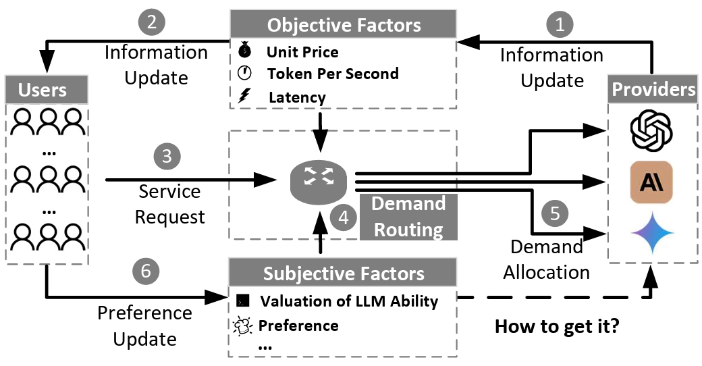
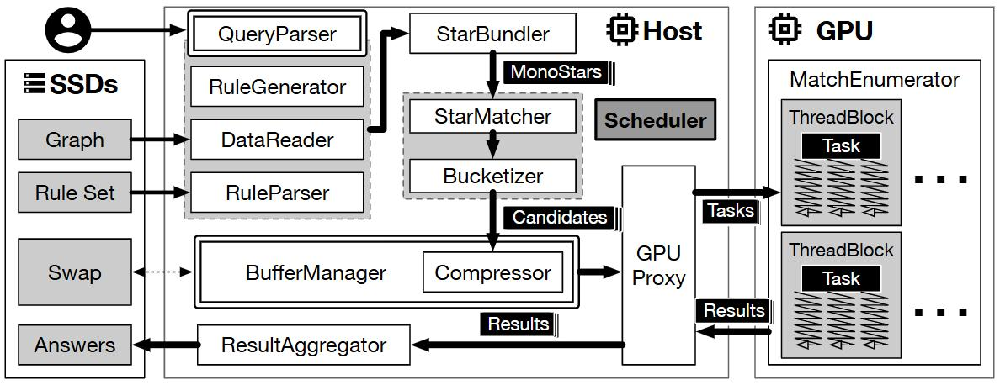
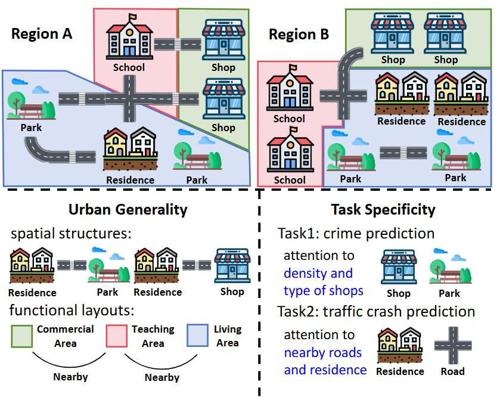

2026.07
论文New
Linking Ubiquities with Connected Knowledge（LUCK）
泛在知识智能研究组（Linking Ubiquities with Connected Knowledge，LUCK）隶属于东南大学计算机科学与工程学院，由金嘉晖老师指导，研究数据智能体、大数据处理、城市计算等方向，推动智能数据应用与知识智能发展。
提出基于 GPU 加速的单机规则图数据清洗方法，显著提升图数据质量管理效率。
从数据到知识、从系统到智能——四个方向紧密协作，共同推进泛在知识智能研究

研究检索增强生成（RAG）、大模型路由与定价、工具调用与记忆管理技术，打造能在真实知识环境中可靠工作的 Data Agent，实现从自然语言到结构化洞察的智能桥梁。

面向 PB 级数据的计算、存储与调度优化。研究大规模图数据处理、CPU-GPU 异构加速与分布式清洗系统，让复杂数据任务更快、更稳、更易用。

用时空数据与知识图谱理解城市运行。研究区域表征学习、交通流预测、轨迹建模、城市事件预测、知识抽取与对齐、多模态语义融合，让数据与知识共同驱动城市更高效地运转。
Xigang Sun, Haoyu Chen, Jiahui Jin*, Xiangguo Sun
Yifan Meng, Xigang Sun, Anran Zhang, Jiaqi Jiang, Jiahui Jin*
Zhendong Guo, Wenchao Bai, Jiahui Jin*
Jiahui Jin*, Yifan Song, Dong Kan, Haojia Zhu, Xiangguo Sun, Zhicheng Li, Xigang Sun, Jinghui Zhang
Siyuan Huang, Jiahui Jin*, Xin Lin, Xigang Sun, Yukun Ban
Xigang Sun, Jiahui Jin*, Hancheng Wang, Xiangguo Sun, Xiaoliang Wang, Jun Zhu
Wenchao Bai, Wenfei Fan, Shuhao Liu, Kehan Pang, Xiaoke Zhu, Jiahui Jin*
Wenchao Bai, Wenfei Fan, Jiahui Jin, Daji Li, Jian Li, Shuhao Liu, Mingliang Ouyang, Qiang Yuan
Haojia Zhu, Zhicheng Li, Jiahui Jin*
Jinghui Zhang, Zhengjia Xu, Dingyang Lv, Zhan Shi, Dian Shen, Jiahui Jin, Fang Dong
项目负责人 · No. 62572119 · 50万 · 2026.01–2029.12
参与 · No. 2023YFC3804100 · 2023.12–2026.12
参与 · No. 62232004 · 294万 · 2023.01–2027.12
项目负责人 · No. 62072099 · 57万 · 2021.01–2024.12
子课题负责人 · No. 2018AAA0101200 · 62万 · 2019.12–2022.12
项目负责人 · No. 61702096 · 25万 · 2018.01–2020.12
项目负责人 · No. BK20170689 · 20万 · 2017.07–2020.06
朱浩嘉 · BESC 2024 最佳学生论文奖
课题组博士生获评优秀博士论文
课题组在年度评优中表现突出
课题组硕士毕业生获评校级优秀论文
我们重视每个人的成长节奏，也珍视一起把事情做好的成就感
毕业生就职于华为、腾讯、字节跳动、阿里、滴滴、美团、微软等公司，部分同学赴深圳研究院、香港等地深造。
本科生、硕士生、博士生，以及任何对研究充满热情的同学，都欢迎联系我们。这里有真实的问题、充分的设备和认真交流的同伴。